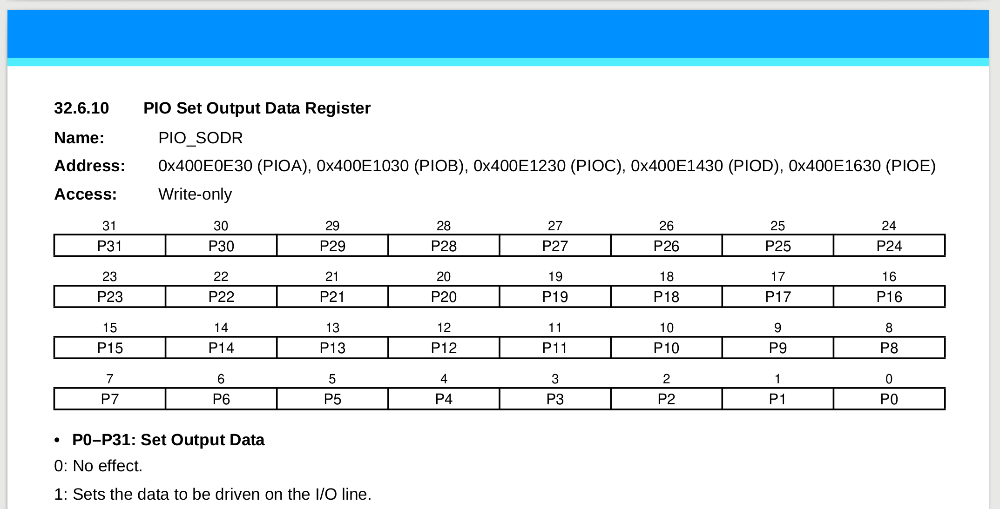
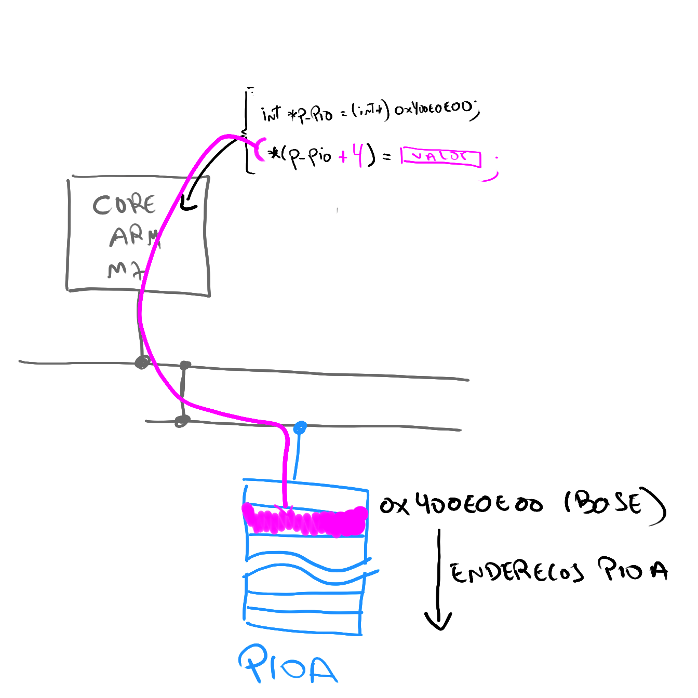

Driver - Lab¶
Nessa aula iremos utilizar como projeto referência o LAB-1.
Entrega¶
| Pasta |
|---|
Lab2-PIO-Driver |
Como começar:
-
Vocês devem realizar uma cópia do LAB-1 que está no seu repositório para a pasta
Lab2-PIO-Driver, iremos modificar o que fizemos no laboratório passado. -
A entrega continua sendo feita pelo repositório que foi gerado no laboratório passado.
-
Estou mudando o padrão do nome das pastas, eu tirei a subpasta
Labse adicionei o número do lab no nome da pasta.
O objetivo desse laboratório é o do entendimento das funções utilizadas para configurar o PIO. Como um pino é configurado como saída e entrada? Como o firmware manipula o periférico PIO? Entender o que o PIO é capaz de fazer. Para isso iremos aqui implementar nossas próprias funções de interface com o PIO.
Ao final do lab, deverão ter implementado as seguintes funções:
- C:
-
_pio_set(...) -
_pio_clear(...) -
_pio_pull_up(...) -
_pio_set_input(...) -
_pio_set_output(...)
-
- B:
-
_pio_get(...)
-
- A:
-
_delay_ms(...)
-
Driver¶
Vamos implementar uma série de funções que irão configurar o periférico PIO via a escrita em seu banco de registradores. Para isso será necessário ler o manual do uC mais especificamente a secção do PIO.
_pio_set(...)¶
Iremos começar com essa função que é uma das mais simples. Crie uma função no main.c com a seguinte estrutura:
/**
* \brief Set a high output level on all the PIOs defined in ul_mask.
* This has no immediate effects on PIOs that are not output, but the PIO
* controller will save the value if they are changed to outputs.
*
* \param p_pio Pointer to a PIO instance.
* \param ul_mask Bitmask of one or more pin(s) to configure.
*/
void _pio_set(Pio *p_pio, const uint32_t ul_mask)
{
}
Tip
Lembre que essa função serve para acionarmos um pino digital quando o mesmo é configurado como output (fazer ele virar 3.3V).
Na primeira etapa iremos substituir a função que a Microchip já nos disponibiliza por uma criada por nós, em todo lugar no código que você faz o uso da função pio_set(...) substitua a chamada por essa recém criada _pio_set(...).
Tarefa
- Crie a função
_pio_set() - Substitua no código toda ocorrência de
pio_set()pela_pio_set(). - Execute o código, ele não deve funcionar
 .
.- pois agora a função que aciona um pino não está implementada.
Agora será necessário entender como o PIO controla os pinos e o que deve ser feito para que ele atue sobre o pino como desejamos. A parte da secção do manual que fala sobre o PIO e suas saídas/entradas é a secção 32 do (manual SAME70), vamos analisar:
SAME70-Manual: 32.5.4 Output Control
Texto extraído do manual:
The level driven on an I/O line can be determined by writing in the Set Output Data Register (PIO_SODR) and the Clear Output Data Register (PIO_CODR). These write operations, respectively, set and clear the Output Data Status Register (PIO_ODSR), which represents the data driven on the I/O lines**. Writing in PIO_OER and PIO_ODR manages PIO_OSR whether the pin is configured to be controlled by the PIO Controller or assigned to a peripheral function. This enables configuration of the I/O line prior to setting it to be managed by the PIO Controller.
Lendo o texto, podemos descobrir que para termos 1 (set) no pino devemos escrever no registrador PIO_SODR, no manual tem mais detalhes sobre tudo do PIO. Vamos analisar a documentação especifica deste registrador (SODR):

Repare que esse registrador é do tipo write-only ou seja ele não pode ser lido, somente escrito. Cada bit desse registrador representa um pino, se pegarmos por exemplo o bit 30 desse registrador (pensando no PIOA) estaríamos nos referindo ao PA30, qualquer alteração ESCRITA nesse bit influenciará SOMENTE esse pino.
Note
Todos os registradores estão listados e explicados no datasheet, de uma olhada na página 362, a descrição começa ai.
Agora que já sabemos o que deve ser feito para colocarmos acionarmos um pino (ativar) e considerando que ele já foi configurado como saída podemos escrever a implementação da função:
void _pio_set(Pio *p_pio, const uint32_t ul_mask)
{
p_pio->PIO_SODR = ul_mask;
}
*p_pio: é um endereço recebido do tipo Pio, ele indica o endereço de memória na qual o PIO (periférico) em questão está mapeado (vamos ver isso em detalhes).ul_mask: é a máscara na qual iremos aplicar ao registrador que controla os pinos para colocarmos 1 na saída.
O que isso significa? Significa que estamos acessando o periférico passado como referência a função (um dos cinco PIO disponíveis no uc: PIOA, PIOB, PIOC, ...) e estamos aplicando a máscara ul_mask no seu registrador PIO_SODR.
Pio type?
O tipo Pio é uma struct alinhada com o endereço de memória do periférico, onde cada 'item' dessa struct representa um endereço da memória do periférico, essa é uma maneira em C de darmos nome a endereços de memória. Isso já está definido no projeto quando usamos o asf (para facilitar nossa vida):
O PIOA é um struct que aponta para o endereço 0x400E0E00
#define PIOA ((Pio *)0x400E0E00U) /**< \brief (PIOA ) Base Address */
O struct possui a seguinte estrutura:
typedef struct {
__O uint32_t PIO_PER; /**< \brief (Pio Offset: 0x0000) PIO Enable Register */
__O uint32_t PIO_PDR; /**< \brief (Pio Offset: 0x0004) PIO Disable Register */
__I uint32_t PIO_PSR; /**< \brief (Pio Offset: 0x0008) PIO Status Register */
__I uint32_t Reserved1[1];
__O uint32_t PIO_OER; /**< \brief (Pio Offset: 0x0010) Output Enable Register */
__O uint32_t PIO_ODR; /**< \brief (Pio Offset: 0x0014) Output Disable Register */
__I uint32_t PIO_OSR; /**< \brief (Pio Offset: 0x0018) Output Status Register */
__I uint32_t Reserved2[1];
__O uint32_t PIO_IFER; /**< \brief (Pio Offset: 0x0020) Glitch Input Filter Enable Register */
__O uint32_t PIO_IFDR; /**< \brief (Pio Offset: 0x0024) Glitch Input Filter Disable Register */
Onde: O, I são macros que bloqueiam os endereços para:
__O: Apenas escrita__I: Apenas Leitura__IO: Apenas Leitura
#ifdef __cplusplus
#define __I volatile /*!< Defines 'read only' permissions */
#else
#define __I volatile const /*!< Defines 'read only' permissions */
#endif
#define __O volatile /*!< Defines 'write only' permissions */
#define __IO volatile /*!< Defines 'read / write' permissions */
O diagrama a seguir ilustra o que acontece quando fazemos: p_pio->PIO_SODR = ul_mask;

Modifique e teste
A função está pronta, agora precisamos testar. Com a modificação no código faça a gravação do uC e ele deve voltar a piscar o LED quando você aperta o botão. Agora a função implementada possui a mesma funcionalidade daquela fornecida pelo fabricante.
- Embarque o código e o mesmo deve funcionar normalmente caso a função implementada esteja correta.
_pio_clear(...)¶
Faça o mesmo para a função clear:
/**
* \brief Set a low output level on all the PIOs defined in ul_mask.
* This has no immediate effects on PIOs that are not output, but the PIO
* controller will save the value if they are changed to outputs.
*
* \param p_pio Pointer to a PIO instance.
* \param ul_mask Bitmask of one or more pin(s) to configure.
*/
void _pio_clear(Pio *p_pio, const uint32_t ul_mask)
{
}
Vocês deverão descobrir pelo manual qual registrador que deve ser acessado. Releia a secção 32.5.4
Modifique e teste
- Crie a função
_pio_clear() - Substitua no código toda ocorrência de
pio_clearpor_pio_clear - Implemente a função.
- Compile, programe e teste
_pio_pull_up(...)¶
Warning
Só continue se a implementação anterior funcionou.
Vamos implementar uma função que faz a configuração do pullup nos pinos do PIO, esse pullup é utilizado no botão da placa. Para isso declare a função a seguir:
/**
* \brief Configure PIO internal pull-up.
*
* \param p_pio Pointer to a PIO instance.
* \param ul_mask Bitmask of one or more pin(s) to configure.
* \param ul_pull_up_enable Indicates if the pin(s) internal pull-up shall be
* configured.
*/
void _pio_pull_up(Pio *p_pio, const uint32_t ul_mask,
const uint32_t ul_pull_up_enable){
}
Essa função recebe o PIO que irá configurar, os pinos que serão configurados e como último parâmetro se o pullup estará ativado (1) ou desativado (0).
Info
Leia o manual do PIO, especificamente a secção 32.5.1.
Modifique e teste
- Crie a função
_pio_pull_up - Substitua no código toda ocorrência de
pio_pull_uppor_pio_pull_up. - Implemente
- Compile, programe e Teste
_pio_set_input(...)¶
Agora vamos criar uma nova função para configurar um pino como entrada, para isso inclua os seguintes defines que serão utilizados como forma de configuração da função:
/* Default pin configuration (no attribute). */
#define _PIO_DEFAULT (0u << 0)
/* The internal pin pull-up is active. */
#define _PIO_PULLUP (1u << 0)
/* The internal glitch filter is active. */
#define _PIO_DEGLITCH (1u << 1)
/* The internal debouncing filter is active. */
#define _PIO_DEBOUNCE (1u << 3)
Esses defines serão passados como configuração da função _pio_set_input() no parâmetro ul_attribute. Declare no seu código a seguinte função:
/**
* \brief Configure one or more pin(s) or a PIO controller as inputs.
* Optionally, the corresponding internal pull-up(s) and glitch filter(s) can
* be enabled.
*
* \param p_pio Pointer to a PIO instance.
* \param ul_mask Bitmask indicating which pin(s) to configure as input(s).
* \param ul_attribute PIO attribute(s).
*/
void _pio_set_input(Pio *p_pio, const uint32_t ul_mask,
const uint32_t ul_attribute)
{
}
Para testar essa função substitua o seguinte trecho de código que configura um pino como entrada + o pull-up
pio_set_input(BUT_PIO, BUT_PIO_MASK, _PIO_DEFAULT);
_pio_pull_up(BUT_PIO, BUT_PIN_MASK, 1);
Para:
_pio_set_input(BUT_PIO, BUT_PIO_MASK, _PIO_PULLUP | _PIO_DEBOUNCE);
Info
Leia o manual do PIO, especificamente a secção 32.5.9.
Tip
Utilize a função já implementada _pio_pull_up()
Tarefa: Modifique e teste
- Crie a função
_pio_set_input - Substitua no código toda ocorrência de
pio_set_inputpor_pio_set_input. - Implemente
- Compile, programe e teste
_pio_set_output(...)¶
Na aula passada utilizamos a função pio_set_output para configurarmos que o pino é uma saída. Iremos aqui definir uma nova função chamada de _pio_set_output() que implementa essa função.
Defina no seu código a função a seguir:
/**
* \brief Configure one or more pin(s) of a PIO controller as outputs, with
* the given default value. Optionally, the multi-drive feature can be enabled
* on the pin(s).
*
* \param p_pio Pointer to a PIO instance.
* \param ul_mask Bitmask indicating which pin(s) to configure.
* \param ul_default_level Default level on the pin(s).
* \param ul_multidrive_enable Indicates if the pin(s) shall be configured as
* open-drain.
* \param ul_pull_up_enable Indicates if the pin shall have its pull-up
* activated.
*/
void _pio_set_output(Pio *p_pio, const uint32_t ul_mask,
const uint32_t ul_default_level,
const uint32_t ul_multidrive_enable,
const uint32_t ul_pull_up_enable)
{
}
Essa função é um pouco mais complexa, e deve executar as seguintes configurações:
- Configurar o PIO para controlar o pino
- secção 32.5.2
When a pin is multiplexed with one or two peripheral functions, the selection is controlled with the Enable Register (PIO_PER) and the Disable Register (PIO_PDR). The Status Register (PIO_PSR) is the result of the set and clear registers and indicates whether the pin is controlled by the corresponding peripheral or by the PIO Controller.
-
Configurar o pino em modo saída
- secção
32.5.4
- secção
-
Definir a saída inicial do pino (
1ou0)- aqui você pode fazer uso das duas funções recentes implementadas.
-
Ativar ou não o multidrive :
- Leia a secção
32.5.6
- Leia a secção
-
Ativar ou não o pull-up :
- utilize a função
_pio_pull_up()recém declarada.
- utilize a função
Uma vez implementada a função, utilize ela no seu código substituindo a função
pio_set_output()por essa função_pio_set_output(). Teste se o LED continua funcionando, se continuar quer dizer que sua função foi executada com sucesso.
Tip
Utilize as funções já implementada _pio_set(), _pio_clear(), _pio_pull_up()
Tarefa: Modifique e teste
- Crie a função
_pio_set_output - Substitua no código toda ocorrência de
pio_set_outputpor_pio_set_output. - Implemente
- Compile, programe e teste
Até aqui é conceito C.
Conceito B: _pio_get(...)¶
Implemente a função _pio_get():
/**
* \brief Return 1 if one or more PIOs of the given Pin instance currently have
* a high level; otherwise returns 0. This method returns the actual value that
* is being read on the pin. To return the supposed output value of a pin, use
* pio_get_output_data_status() instead.
*
* \param p_pio Pointer to a PIO instance.
* \param ul_type PIO type.
* \param ul_mask Bitmask of one or more pin(s) to configure.
*
* \retval 1 at least one PIO currently has a high level.
* \retval 0 all PIOs have a low level.
*/
uint32_t pio_get(Pio *p_pio, const pio_type_t ul_type,
const uint32_t ul_mask)
{}
ul_type
PIO_INPUT: quando for para ler umaentradaPIO_OUTPUT_0: quando for para ler umasaida
Tarefa: Modifique e teste
- Crie a função
_pio_get() - Substitua no código todas as ocorrências de
pio_getpor_pio_get() - Implemente
- Compile, programe e teste
Conceito A: _delay_ms(...)¶
Crie sua Própria função de delay_ms
Tarefa: Modifique e teste
- Crie a função
_delay_ms() - Substitua no código todas as ocorrências de
delay_mspor_delay_ms() - Implemente
- Compile, programe e teste
Preencher ao finalizar o lab